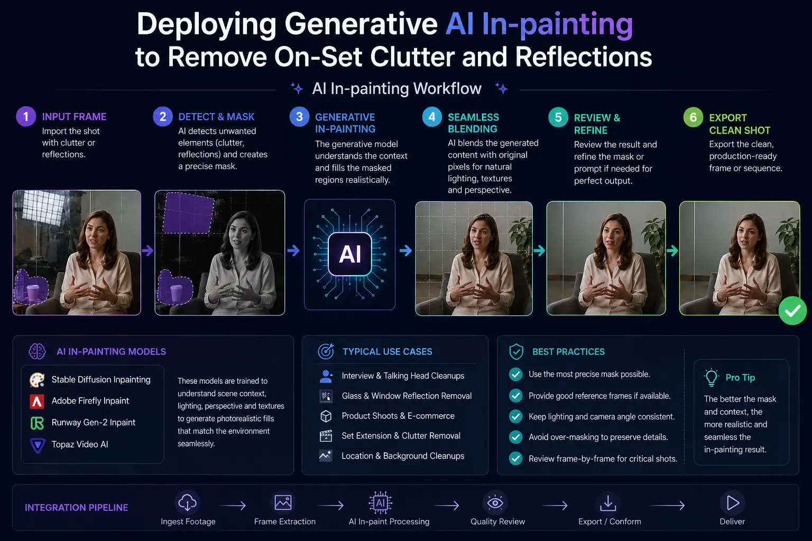
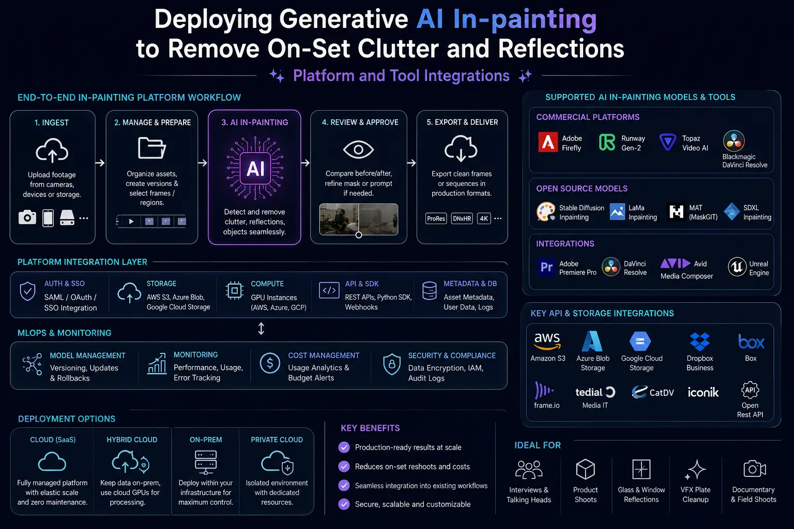

Deploying Generative AI In-painting to Remove On-Set Clutter and Reflections
The Evolution of Commercial Post-Production Cleanup
In high-end commercial video production, delivering flawless imagery is paramount. Whether capturing high-fashion apparel, luxury automotive curves, sleek consumer electronics, or corporate executive interviews, the viewer’s eye naturally locks onto visual imperfections. Despite meticulous set design, tight lighting setups, and dedicated art departments, live-action film sets are chaotic environments. Stray electrical cables, C-stand reflections on glass windows, boom mic tips creeping into wide shots, unwanted brand trademarks, or unexpected background clutter frequently compromise otherwise pristine frames.
Historically, resolving these issues in post-production required tedious visual effects work. Editors and compositors spent dozens of hours performing manual frame-by-frame rotoscoping, planar tracking, clone stamping, and wire paint-outs. If a camera motion was complex or involved changing perspectives, producing a realistic background plate often meant expensive manual painting or even ordering budget-draining reshoots. Today, the deployment of AI Generative In-painting has completely revolutionized this paradigm, empowering post-production studios to eliminate set distractions in a fraction of the time.
Unlike legacy clone tools that simply duplicate static pixels from nearby areas, deep-learning generative models evaluate spatial geometry, temporal motion vectors, shadow gradients, camera grain structure, and light falloff across entire multi-frame sequences. By integrating Automated Clean-Plate Video Removal and intelligent neural fills into modern editing pipelines, visual effects artists can restore background continuity seamlessly, allowing the hero product or narrative focus to shine without compromise.
Understanding the Science Behind AI Generative In-painting
At its core, AI Generative In-painting represents a convergence of computer vision, deep diffusion neural architectures, and temporal optical flow tracking. When an editor isolates an unwanted object—such as a microphone cable running across a polished studio floor—the AI system performs a multi-stage analysis:
- Spatial Masking and Object Detection: The user applies a loose vector mask or selects an object using neural segmentation tools. The model identifies the target geometry while establishing boundary pixels that define surrounding textures.
- Temporal Optical Flow Alignment: As the camera pans, tilts, or dollys, background details obscured by the unwanted object in frame 10 might become visible in frame 45. The system utilizes clean plate generation AI to harvest occluded background information from preceding and succeeding frames, stitching together a spatially accurate reference map.
- Generative Pixel Synthesis: For areas where the background was never captured on camera, the generative model synthesizes entirely new photorealistic textures that conform to the lighting environment, depth of field, perspective distortion, and material physics of the scene.
- Film Grain and Noise Re-injection: To prevent the smooth, artificial look common in early digital fixes, neural engines measure the natural ISO noise profile of the camera sensor and apply matching grain over the inpainted region.
By mastering these temporal synthesis mechanics, modern post-production teams can execute comprehensive visual effects spot cleanup across complex 4K and 8K commercial camera takes without leaving visual artifacts or edge-swimming distortions behind.
Streamlining Wire Removal and Heavy Rigging Cleanup
Suspension wires, stunt harnesses, and product levitation rigs are staples of modern commercial filmmaking. From soaring beverage bottles in dynamic splash commercials to flying footwear in athletic campaigns, wire work allows directors to capture physical motion that CGI struggles to replicate realistically. However, removing these physical support structures has historically been one of the most labor-intensive tasks in visual effects.
By deploying automated video wire removal algorithms powered by machine learning, editors no longer need to paint out thin lines frame by single frame. Neural wire removal tools detect continuous high-contrast edges corresponding to steel cables or monofilament lines. Once highlighted, the model automatically tracks the wire across complex camera movements, leveraging clean plate generation AI to reconstruct the background behind the harness or wire rig instantly.
This automated approach reduces turnarounds on complex action spots or product levitation scenes from days to minutes. Furthermore, because generative algorithms understand background illumination, wires crossing intricate patterns—such as brick walls, wood grain, or textured fabric—are erased without leaving blurry tracks or telltale smudges.
Tackling Severe Reflections, Light Leakage, and On-Set Clutter
Reflections are another major challenge on commercial film sets. Filming behind glass windows, polished marble countertops, vehicle windshields, or metallic product packaging often catches glare from studio softboxes, LED panels, ring lights, or crew members standing behind the camera. While polarizing filters help on set, they cannot eliminate every unwanted reflection without altering subject contrast or color depth.
With modern generative toolsets, removing reflective clutter becomes a precise, surgical process:
- Eyeglass and Lens Glare Elimination: In corporate executive videos and commercial interviews, studio lights frequently bounce off prescription eyewear. Applying visual effects spot cleanup through generative models removes harsh specular glare while preserving natural skin textures and eye reflections beneath.
- Architectural Glass Cleanup: In real estate, automotive, and luxury interior commercials, windows often reflect unwanted camera tracks or light stands. Deploying Automated Clean-Plate Video Removal replaces glare-filled glass panes with pristine reflections or clean background vistas.
- Removing Studio Equipment Clutter: Backgrounds in wide location shots frequently catch stray sandbags, sound blankets, reflection cards, or safety cones. Using Runway AI object removal from video, post-production teams can select these items and restore the environment seamlessly.
90% Faster Cleanup Times
Automating rotoscoping and paint-out tasks eliminates frame-by-frame cloning, allowing post-production suites to deliver polished commercial spots in hours rather than weeks.
Photorealistic Background Reconstruction
Neural texture synthesis analyzes spatial and temporal continuity to fill masked regions with believable lighting, grain, and structural context across complex video motion.
Substantial Production Cost Savings
Eliminate costly physical location reshoots by removing unexpected reflections, studio light stands, cables, or unwanted background clutter directly in post-production.
Perfect Integration with Color Pipelines
Performing generative spot cleanup before Advanced Commercial Color Grading guarantees that contrast adjustments, LUTs, and vignettes blend without artifacts.

Software Ecosystem & Best-in-Class Generative Tools
The modern video post-production landscape offers a suite of powerful AI-driven software designed for rapid visual cleanup. Depending on project complexity, studio infrastructure, and delivery deadlines, colorists and visual effects artists combine multiple applications:
1. Runway AI Object Removal from Video: Runway’s Gen-2 and Gen-3 platforms provide cloud-accelerated inpainting capabilities specifically optimized for commercial video pipelines. Utilizing Runway AI object removal from video, editors can upload raw sequence passes, draw a simple brush stroke over unwanted moving objects or background clutter, and generate clean background fills with accurate camera tracking in minutes.
2. Adobe Premiere Pro & After Effects Generative Fill: Adobe’s integration of Firefly-driven generative engines into Premiere Pro and After Effects provides NLE editors with immediate access to generative tools directly inside their editing timelines. Harnessing Premiere Pro generative fill allows editors to extend frame boundaries for wider aspect ratios, remove unwanted background logos, and perform dynamic object cleanup without rendering intermediate video files.
3. DaVinci Resolve Studio Magic Mask & Object Removal: DaVinci Resolve’s Neural Engine incorporates advanced object removal nodes that leverage optical flow vectors to generate dynamic clean plates. Combined with planar tracking tools in Mocha Pro, editors can perform high-precision automated video wire removal while maintaining full 32-bit float color accuracy inside an ACES color space.
Pro-Tier Commercial Post-Production Hacks for Seamless Cleanup
Achieving undetectable, broadcast-ready visual cleanup requires applying seasoned commercial post-production hacks that elevate raw AI outputs into pristine master assets:
- Hack 1: Pre-Cleanup Denoising. Generative algorithms perform best on clean, noise-free source material. Apply a spatial-temporal noise reduction pass before running AI Generative In-painting. Re-inject the original sensor grain over the final rendered cleanup patch for perfect blending.
- Hack 2: Multi-Pass Layer Masking. When removing large structural objects across complex backgrounds, split the cleanup task into separate foreground and background passes. Use clean plate generation AI to establish the base layer, then apply local generative masks for moving elements.
- Hack 3: Color Linearization Before In-Painting. Always perform generative inpainting on un-graded, camera-native log footage mapped to a linear color space. Processing uncompressed wide-gamut pixels prevents gamma shifts and banding during subsequent color correction stages.
- Hack 4: Edge Softening & Feathered Blending. Avoid hard vector mask boundaries when performing visual effects spot cleanup. Feather mask edges between 8 to 15 pixels to allow subtle lighting changes and depth-of-field blur to blend smoothly into surrounding pixels.
AI In-Painting Suites
- Runway Gen-2 & Gen-3 Inpainting tools.
- Adobe Premiere Pro Generative Fill.
- After Effects Content-Aware Fill.
- DaVinci Resolve Object Removal.
Core Cleanup Workflows
- Automated video wire and rig removal.
- Glass, acrylic, and chrome reflection suppression.
- Dynamic clean plate generation & tracking.
- Film grain matching & noise synthesis.
Commercial Finishing
- ACES color space linearization.
- Advanced commercial color grading nodes.
- HDR highlight restoration & mask blending.
- Master digital broadcast delivery.

Bridging In-Painting with Advanced Commercial Color Grading
In professional post-production workflows, image cleanup and color grading are deeply interconnected. Applying AI Generative In-painting must occur prior to or in close coordination with Advanced Commercial Color Grading to prevent visual inconsistencies.
If a colorist attempts to apply aggressive contrast curves, color balance shifts, or stylized film emulation LUTs to a scene containing distracting background reflections or uncleaned wires, those technical flaws become magnified. Harsh reflections can cause unwanted clipping in highlight channels, while visible cables draw focus away from skin tones and hero product contours.
By completing Automated Clean-Plate Video Removal and visual effects spot cleanup first, colorists work with a pristine baseline canvas. When Advanced Commercial Color Grading is applied subsequently, exposure vignettes, localized qualifiers, skin tone isolations, and creative color grades behave predictably across every pixel in the frame. This integrated methodology guarantees a polished, high-converting visual finish for television broadcasts, cinema spots, and digital social media campaigns.
Strategic Business Advantage: Faster Turnarounds and Reduced Reshoot Costs
For commercial brands, creative agencies, and video production houses, time to market is a critical competitive metric. Physical location reshoots caused by unexpected background clutter, glare, or rigging oversights can cost tens of thousands of dollars in crew fees, talent rates, equipment rentals, and location permits—not to mention delaying launch schedules by weeks.
By adopting modern generative workflows—including Runway AI object removal from video, Premiere Pro generative fill, and automated clean plate synthesis—production teams eliminate the risk of reshoots. Sets can be cleaned post-facto with complete photorealistic fidelity, giving directors and agency clients maximum creative control inside the editing suite.
At The PhD Ads, our Madurai-based post-production studio leverages these cutting-edge generative tools and commercial post-production hacks to deliver world-class visual assets. By pairing advanced computer vision cleanup with precision color science, we ensure that every commercial spot we produce communicates brand authority, captures viewer attention, and drives business growth.
Key Topics
Ready to Clean On-Set Clutter with Generative AI In-Painting?
At The PhD Ads in Madurai, we combine AI Generative In-painting, Automated Clean-Plate Video Removal, and Advanced Commercial Color Grading to turn imperfect production footage into pristine, high-converting commercial assets. Contact our post-production team today to streamline your video workflows.
Email: team@e2o.in